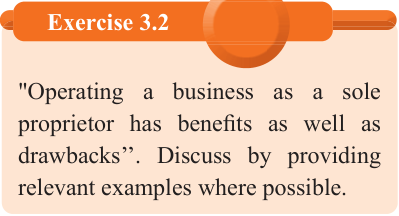

Limited skills: The business owner may not have all the necessary skills on financing, marketing, purchasing, producing, and supervising the business operations.This limits the sole proprietor to perform all duties and functions efficiently; hence it may hinder the growth of the business.They, therefore, need to spend more on hiring those with the appropriate skills.
Uncertainty in continuity: The life span of a sole proprietorship is uncertain and difficult to predict.The sole proprietorship may be closed down or sold when the proprietor faces challenges that may affect supervision of the business.Such challenges may be death, sickness or imprisonment.In such cases, the business may easily come to an end.
Working long hours: As the sole owner and operator of the business, the sole proprietor is responsible for all aspects of its operation.This often leads to a significant time commitment as the proprietor takes on various roles including management, marketing, administration, and more.Thus, sole proprietors may find themselves working extended hours to fulfil these diverse roles.
High cost of production: Being a small business with small scale production, sole proprietors may not reap the benefit of economies of large scale production.This may result in a high cost of production.Also, sole proprietors may lack the financial capacity to access bulky discounts on supplies, machinery or raw materials.
Difficult to expand the business: Although the sole proprietor gains all the business profits, it is often difficult to raise funds to expand their business due to small startup capital and high competition from the large enterprises available in the same industry.
Formation of a sole proprietorship
In starting up a sole proprietorship there are few and usually not complicated legal formalities to be adhered to.The only requirement to the sole proprietor is to secure the relevant business licence and permit from the local council depending on the activities to be undertaken.Figure 3.3 shows examples of business licences used in Tanzania Mainland and Zanzibar.It is also important for the sole proprietor to register the business name with Business Registration and Licensing Agency (BRELA) for Tanzania Mainland and Zanzibar Business and Property Registration Agency (ZBPRA) for Zanzibar.Thus, the formation of a sole proprietorship is the simplest of all forms of business units.
